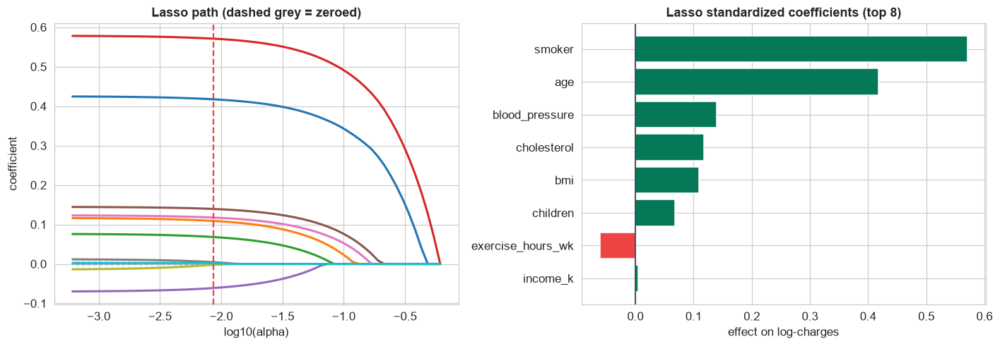

More features is not always better. Throw 15 predictors, several measuring the same thing, into ordinary regression and you get unstable, uninterpretable coefficients. Regularization is the fix: it shrinks weak effects, zeros useless ones, and picks one representative from a redundant group, all automatically.
Steps 1–7 are the usual pipeline, with one loud finding: multicollinearity (weight, height, and BMI are the same thing). Steps 8–9 are where regularization earns its keep, selecting the signal and resolving the redundancy without a single manual decision.
The 12-Step Method
The same repeatable loop, now with 15 predictors to sift. The companion notebook runs all twelve steps; the sections below narrate the story.
One row per patient with age, sex, height_cm,
weight_kg, bmi, children, smoker,
exercise_hours_wk, diet_score, blood_pressure, cholesterol,
region, income_k, two noise columns, and the target charges.
Define, Collect, Inspect, Clean (Steps 1–4)
Define the objective
Predict a patient's annual charges and identify the cost drivers, from 15 candidate features, for an insurer pricing premiums or a health program targeting prevention. The challenge is choosing which features matter without overfitting or being fooled by redundancy.
Collect the data
A CSV export from the claims system; the same one-line pandas readers apply to a database or an API.
Inspect the data
info() and value_counts() reveal `smoker`/`sex`/`region` in mixed spellings, `bmi` stored
as text with blanks, 18 duplicate patients, and a few missing `charges`, plus the tell that height, weight, and
BMI are three views of one thing.
Clean the data
| Problem | Detail | Fix |
|---|---|---|
| Missing target | 6 rows with no charges | drop |
| Duplicates | 18 repeated patient_id | deduplicate |
| Messy categories | smoker ×8 spellings, sex ×4, region ×12 | standardize to one scheme |
bmi stored as text | with some blanks | coerce to numeric, then rebuild missing from weight / height² |
After cleaning, 994 patients remain with a complete feature set.
Visualize, Transform, Analyze (Steps 5–7)
Visualize the data
Charges are extremely right-skewed (skew ~3.7), so we model log(charges). And one feature splits the data on sight: smokers form a separate, far more expensive cluster, a preview of the dominant driver.
Transform features
We log the target (skew 3.7 → 0.4), one-hot encode region, and standardize
every feature to the same scale, essential so a size penalty treats dollars and years even-handedly.
Analyze patterns: the multicollinearity
Before modeling, the variance inflation factors expose the redundancy we suspected:
Weight, BMI, and height all have VIF far above 10 (versus ~1 for everything else) because BMI is literally computed from weight and height. In ordinary regression this makes their coefficients wild and untrustworthy. Rather than agonize over which to drop, we let regularization resolve it automatically.
Build and Validate (Steps 8–9)
Build the model
We fit four models on the same standardized features, OLS, ridge, lasso, and elastic net. All reach R² ≈ 0.87; the penalty costs almost no accuracy. The difference is in which features each keeps.
Validate the model
Watch the lasso path: as the penalty grows, coefficients shrink and the redundant and noise features drop to exactly zero:
At the cross-validated λ, the lasso has zeroed height, weight, diet score, and both noise columns, keeping BMI to represent body size and resolving the multicollinearity on its own. Cross-validated R² (≈ 0.86) sits right beside the in-sample fit, so the model is not overfit. It predicts cost well, note the two clean clusters, non-smokers and smokers:
This is regularization doing by algorithm what took manual VIF-and-drop work in the house-price study: it found the redundant features and the noise, and pruned them, no hand-tuning, no loss of accuracy.
Interpret and Deploy (Steps 10–11)
Interpret the results

The lasso path: as the penalty grows, the redundant and noise features drop to exactly zero, leaving a short, honest model.
Standardized coefficients put every driver on one scale, so we can rank them. What the lasso kept, and what it threw away:
Smoking is the dominant cost driver by a wide margin, followed by age, then blood pressure, cholesterol, and BMI. Diet score and the noise columns carry no weight, income barely registers, and height and weight were dropped because BMI already captures body size. A short, honest model.
Actionable: a smoking-cessation program targets the single largest cost driver; blood pressure and cholesterol flag preventive-care opportunities; and the insurer can price on a lean, non-redundant feature set.
Deploy the model
Persist the scaler and lasso as one pipeline; score applicants for expected cost (always with a range); target prevention using the modifiable drivers; monitor and retrain as costs inflate. And fairness first: a cost model must be audited so it does not proxy protected attributes, and used within legal limits, regularization helps by keeping the model short and explainable.
Communicate: the Plain-English Write-Up (Step 12)
For a non-statistician
What we did. We took an insurance file with 15 fields per patient, cleaned it (fixed duplicates and inconsistent labels, rebuilt a few missing BMI values from height and weight, standardized the charge amounts), and built a formula that estimates yearly medical cost, letting the method decide which fields matter.
How good is it? It explains about 87% of the differences in cost between patients and holds up on patients it has not seen.
What drives cost, in order:
- ✓Smoking, by far the biggest single driver.
- ✓Then age, blood pressure, cholesterol, and BMI.
- ✓Income, diet score, and two junk fields added nothing and were dropped, and so were height and weight, because BMI already captures body size.
Why the dropping matters. Three fields (height, weight, BMI) measured the same thing, which normally destabilizes a model. The method (a "lasso") sorted it out on its own, keeping one and discarding the rest, leaving a short, trustworthy formula.
The headline: smoking is the number-one cost driver by a wide margin, and a lean model on a handful of health measures predicts cost as well as one using everything.
Run the entire project in Python
The companion notebook is the full 12-step pipeline: it loads and cleans the messy insurance file (categories, text-valued BMI, duplicates), visualizes the skewed charges and the smoker split, standardizes and encodes, exposes the multicollinearity with VIF, fits OLS / ridge / lasso / elastic net, draws the regularization path and the selected-coefficient bar, cross-validates, and interprets the drivers, with every table and chart explained.
View opens the rendered notebook instantly.
Open in Colab runs it live. To run locally, install numpy, pandas,
matplotlib, seaborn, statsmodels, and scikit-learn.
🎓 Key Takeaways
- ✓Many predictors need regularization: a penalty on coefficient size shrinks weak effects and, for the lasso, zeros useless ones, automatic feature selection.
- ✓Standardize before regularizing so the penalty treats every feature fairly, and log a skewed target.
- ✓Multicollinearity is diagnosed with VIF: weight, height, and BMI had VIF far above 10 because BMI is built from the other two.
- ✓The lasso resolved it automatically: it dropped height, weight, and the noise columns, keeping BMI, with no loss of accuracy (R² ~0.87, CV ~0.86).
- ✓Smoking is the dominant cost driver, followed by age, blood pressure, cholesterol, and BMI; a lean model predicts as well as the full one.
Take It Further
Five ways to extend the analysis in the notebook:
Ridge vs lasso on the collinear trio
Compare how ridge and lasso each handle weight, height, and BMI, does ridge keep all three (shrunk) while lasso picks one?
OLS instability
Fit plain OLS with all three body-size features and show how large and unstable their coefficients become.
Tune the elastic-net mix
Sweep l1_ratio and see how the number of selected features changes.
ElasticNetCV(l1_ratio=[...]).A smoker interaction
Does BMI cost more for smokers? Add a bmi × smoker term and check its effect.
Price a patient
Build a one-row profile and predict the charge with an interval, back-transformed to dollars.
exp.All five, worked in a companion notebook
A second notebook, Take It Further, recaps this chapter's model and then works every one of these five extensions with visuals and explanations, ridge vs lasso on the collinear trio, OLS instability, the elastic-net mix, a BMI-by-smoker interaction, and pricing a patient, closing with a plain-English summary.
Quiz: Test Yourself
Eight questions on the regularization case study. Answer them, hit Check Answers, and keep refining until you score 100%. Your progress is saved, so you can hop back to the chapter and return anytime.
Four end-to-end projects, a number, a yes/no, a count, and a many-feature model, all run through the same 12-step method on real, messy data. The book now turns to Machine Learning, starting with Chapter 104 · What Is Machine Learning?